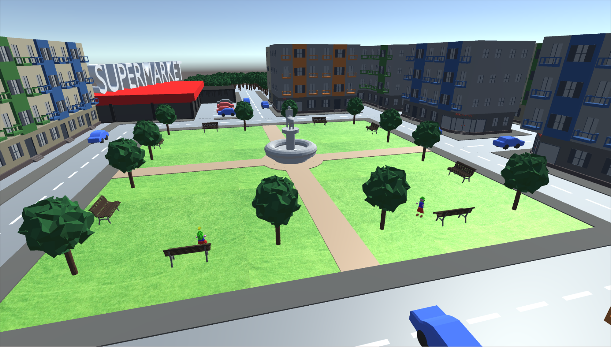
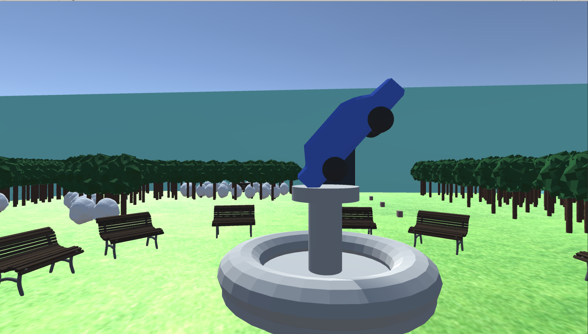
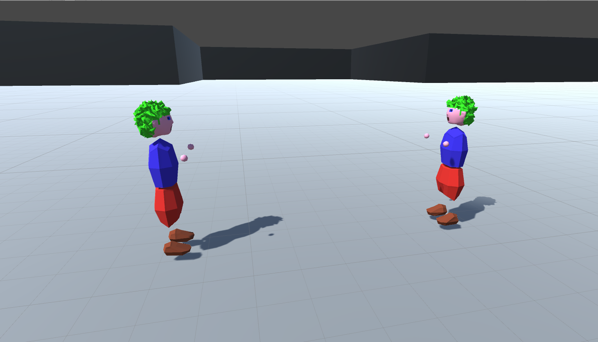

Gameplay
Les niveaux sont composés de deux phases, une ayant lieu dans le monde réel et les autres dans le monde chimérique. Le Gameplay change selon la phase.
Monde Réel
Le joueur se retrouve dans une petite ville, de type Open World minime, où il sera amené à interagir avec les objets et les PNJ, afin de récolter des indices. Ceux-ci seront susceptibles d’être vrais ou faux selon le comportement et les choix faits par le personnage, entraînant par la même occasion des Bonus ou des Malus. Il devra, pour ce faire, être minutieux et examiner l'environnement dans lequel il évolue.
Monde Fictif
Le joueur est plongé dans un univers où le gameplay est plus dynamique. Il doit arriver jusqu'à la salle du boss du niveau, en s'aidant des indices récoltés précédemment. Après avoir passé obstacles et énigmes de toutes sortes, il lui faudra affronter le-dit boss en un combat 1V1, équipé d'armes, pouvant être récupérées tout au long du trajet l'ayant amené jusqu'au boss.
Multijoueur
Endormi, le joueur aura accès à un niveau bonus, jouable en multijoueur via internet. Ce niveaux sera facultatifs : le joueur n'est pas obligé de les terminer pour pouvoir continuer dans l'histoire. Les deux personnages devront, dans un univers semblable à celui du monde fictif, surmonter des obstacles nécessitant une certaine coopération afin de trouver le Boss et de le combattre